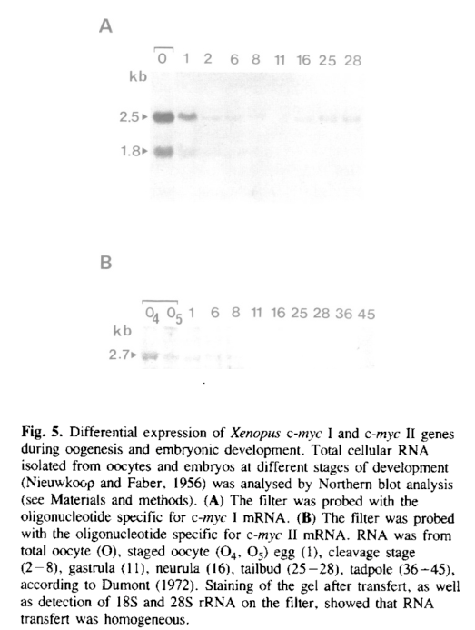

Myc-a (c-Myc I; Xenbase myc.S) is one of the two Xenopus laevis c-Myc homeologs, a basic helix-loop-helix leucine-zipper transcription factor that heterodimerizes with Max and binds E-box (CACGTG) cis-regulatory elements to regulate RNA polymerase II transcription. Like other vertebrate c-Myc proteins it drives growth- and proliferation-related gene expression, and the frog gene transforms mammalian cells together with activated Ras. Its mRNA is a major maternal transcript stored in the oocyte, and it is re-expressed zygotically after gastrulation. The maternal protein is held in the oocyte cytoplasm and enters nuclei after fertilization, but it does not bind DNA with Max during the transcriptionally silent cleavage stages. c-Myc is expressed in pluripotent blastula cells and then at the neural plate border before slug/snai2. There it is required, through targets including Id3, for the formation of neural crest precursors and their derivatives, independently of effects on proliferation or cell death. This places Myc in the blastula-derived competence/potency layer of the neural crest gene regulatory network rather than among the border or crest specifiers. In chick, c-Myc instead maintains the self-renewing premigratory neural crest stem cell pool through a Myc/Miz1 complex.
| GO Term | Evidence | Action | Reason |
|---|---|---|---|
|
GO:0000978
RNA polymerase II cis-regulatory region sequence-specific DNA binding
|
IBA
GO_REF:0000033 |
ACCEPT |
Summary: Myc-a is a bHLH-LZ Myc family protein; vertebrate Myc binds E-box (CACGTG) cis-regulatory sequences of RNA polymerase II target genes as a heterodimer with Max. The PANTHER node placing this activity spans vertebrate c-Myc orthologs with experimental evidence, and Xenopus myc-a is squarely inside that clade.
Reason: Sequence-specific cis-regulatory DNA binding is a core, phylogenetically conserved activity of c-Myc. All E-box contact residues of the basic region are conserved and the Xenopus xc-myc1 gene behaves like mammalian c-Myc in transformation assays. One stage-specific caveat: in transcriptionally silent cleavage embryos, nuclear c-Myc does not bind DNA with Max. This restricts when the activity operates but does not argue against the IBA.
Supporting Evidence:
file:XENLA/myc-a/myc-a-deep-research-falcon.md
In the established vertebrate MYC mechanism, MYC partners with MAX to recognize E-box regulatory sequences
PMID:8455622
this homology was consistent with the ability of the xc-myc1 and xN-myc1 genes to function as oncogenes in primary mammalian cells
PMID:7651422
During early development, when the entire embryonic genome is transcriptionally inactive, c-Myc does not exhibit a DNA binding activity with Max
|
|
GO:0000981
DNA-binding transcription factor activity, RNA polymerase II-specific
|
IBA
GO_REF:0000033 |
ACCEPT |
Summary: RNA polymerase II-specific DNA-binding transcription factor activity, inherited from the vertebrate Myc ancestor. This is the central molecular function of Myc-a, acting via Myc-Max heterodimers on E-boxes.
Reason: Consistent with the human MYC review, where GO:0000981 is the primary core molecular function. No evidence of loss or divergence in Xenopus c-Myc. Xenopus c-Myc is required as a transcriptional regulator upstream of slug and the Myc target Id3 in neural crest-forming ectoderm.
Supporting Evidence:
PMID:15772131
Id3 is a Myc target that plays an essential role in the formation and maintenance of neural crest stem cells
file:XENLA/myc-a/myc-a-deep-research-falcon.md
In the established vertebrate MYC mechanism, MYC partners with MAX to recognize E-box regulatory sequences
|
|
GO:0000981
DNA-binding transcription factor activity, RNA polymerase II-specific
|
ISS
GO_REF:0000024 |
ACCEPT |
Summary: Same activity as the IBA row, transferred by UniProt curators from human MYC (P01106) on sequence similarity.
Reason: The ISS from human MYC agrees with the phylogenetic inference and the conserved bHLH-LZ/Myc box architecture. It is a duplicate of a correct core annotation and duplicates are acceptable.
Supporting Evidence:
PMID:8455622
this homology was consistent with the ability of the xc-myc1 and xN-myc1 genes to function as oncogenes in primary mammalian cells
file:XENLA/myc-a/myc-a-deep-research-falcon.md
In the established vertebrate MYC mechanism, MYC partners with MAX to recognize E-box regulatory sequences
|
|
GO:0003700
DNA-binding transcription factor activity
|
IEA
GO_REF:0000002 |
ACCEPT |
Summary: Generic DNA-binding transcription factor activity mapped from InterPro Myc/bHLH signatures.
Reason: Correct but less specific parent of GO:0000981, which the gene also carries. Broad IEA mappings that are correct are kept.
Supporting Evidence:
file:XENLA/myc-a/myc-a-deep-research-falcon.md
In the established vertebrate MYC mechanism, MYC partners with MAX to recognize E-box regulatory sequences
|
|
GO:0005634
nucleus
|
IBA
GO_REF:0000033 |
ACCEPT |
Summary: Myc-a acts in the nucleus as a chromatin-associated transcription factor.
Reason: Xenopus c-Myc protein is nuclear in somatic cells. In oocytes a large maternal pool is stored in the cytoplasm and enters nuclei after fertilization. The nucleus is the site where the protein is active.
Supporting Evidence:
file:XENLA/myc-a/myc-a-deep-research-falcon.md
Xenopus c-Myc protein was found predominantly in the nuclear fraction of somatic cells
PMID:7651422
Fertilization triggers the selective and total entry of only p64 c-Myc into the nucleus
|
|
GO:0005634
nucleus
|
IEA
GO_REF:0000044 |
ACCEPT |
Summary: Nuclear localization mapped from the UniProt subcellular location annotation.
Reason: Correct; duplicates the IBA. The oocyte cytoplasmic store is a storage form and does not warrant a separate cytoplasm annotation.
Supporting Evidence:
PMID:7651422
Fertilization triggers the selective and total entry of only p64 c-Myc into the nucleus
|
|
GO:0006355
regulation of DNA-templated transcription
|
IEA
GO_REF:0000002 |
ACCEPT |
Summary: Broad regulation of DNA-templated transcription, mapped from InterPro.
Reason: Correct but general; the more specific GO:0006357 (regulation of transcription by RNA polymerase II) is also present. Kept as a correct broad IEA.
Supporting Evidence:
file:XENLA/myc-a/myc-a-deep-research-falcon.md
In the established vertebrate MYC mechanism, MYC partners with MAX to recognize E-box regulatory sequences
|
|
GO:0006357
regulation of transcription by RNA polymerase II
|
IBA
GO_REF:0000033 |
ACCEPT |
Summary: Regulation of RNA polymerase II transcription, the process directly carried out by the Myc-Max transcription factor.
Reason: Myc regulates Pol II target genes both by activation through E-boxes with Max and by repression through Miz1. Both modes are conserved, and the chick neural crest study shows the Myc/Miz1 repressive mode in vivo. The neutral parent term captures both modes and is the right level of precision for Xenopus, where activation vs repression of specific targets has not been tested.
Supporting Evidence:
PMID:27926868
Our results suggest that the Myc/Miz1 complex transcriptionally regulates levels of factors including cyclin dependent kinase inhibitors
file:XENLA/myc-a/myc-a-deep-research-falcon.md
In the established vertebrate MYC mechanism, MYC partners with MAX to recognize E-box regulatory sequences
|
|
GO:0008284
positive regulation of cell population proliferation
|
IBA
GO_REF:0000033 |
KEEP AS NON CORE |
Summary: Positive regulation of cell population proliferation, a well-established conserved output of vertebrate c-Myc.
Reason: Phylogenetically sound and correct for c-Myc as a family. Myc's growth and proliferation programme is a pleiotropic, context-dependent output rather than the defining role in the Xenopus embryo. The neural crest requirement for Xenopus c-Myc is explicitly independent of proliferation and cell death. In chick premigratory crest, c-Myc also controls self-renewal without changing proliferation.
Supporting Evidence:
PMID:12791268
These effects are not dependent upon changes in cell proliferation or cell death
PMID:27926868
Although cMyc is well-known for its ability to induce proliferation, this does not appear to be the case in the neural crest, highlighting its tissue-specific roles
|
|
GO:0046983
protein dimerization activity
|
IEA
GO_REF:0000002 |
ACCEPT |
Summary: Protein dimerization activity via the HLH-leucine zipper, which mediates obligate heterodimerization with Max.
Reason: Consistent with the human MYC review. Heterodimerization with Max is required for E-box binding, and the bHLH-LZ domain is fully conserved in Myc-a. Lemaitre et al. show that Xenopus c-Myc/Max complexes form in vitro and are regulated during early development.
Supporting Evidence:
PMID:7651422
embryonic nuclei not only prevent the formation of c-Myc/Max complexes but also dissociate such preformed complexes
file:XENLA/myc-a/myc-a-deep-research-falcon.md
In the established vertebrate MYC mechanism, MYC partners with MAX to recognize E-box regulatory sequences
|
|
GO:0071943
Myc-Max complex
|
IBA
GO_REF:0000033 |
ACCEPT |
Summary: Member of the Myc-Max heterodimeric transcription factor complex.
Reason: Myc-Max is the conserved functional unit of c-Myc DNA binding. In Xenopus it is absent in the transcriptionally silent cleavage embryo, but it is the operative complex once zygotic transcription starts. The complex term is consistent with the human MYC review.
Supporting Evidence:
PMID:7651422
During early development, when the entire embryonic genome is transcriptionally inactive, c-Myc does not exhibit a DNA binding activity with Max
file:XENLA/myc-a/myc-a-deep-research-falcon.md
In the established vertebrate MYC mechanism, MYC partners with MAX to recognize E-box regulatory sequences
|
|
GO:0014029
neural crest formation
|
IMP
PMID:12791268 The protooncogene c-myc is an essential regulator of neural ... |
NEW |
Summary: Xenopus c-Myc is expressed at the neural plate border before slug and is required for the formation of neural crest precursors; knockdown abolishes the NC precursors and their derivatives without changing proliferation or apoptosis, and the Myc target Id3 is required downstream.
Reason: Synthesis across lines of evidence. (1) Expression: c-myc is expressed in pluripotent blastula cells and then at the neural plate border, upstream of slug. (2) Activity: it is a Myc-Max E-box transcription factor whose target Id3 is itself required for NC progenitors. (3) Loss of function: knockdown removes NC precursors without changes in proliferation or apoptosis, and is rescued by c-Myc but not by Slug alone (per the full-text summary in the deep research). (4) Conservation: c-Myc is also required for the premigratory NC pool in chick. Network layer: Myc is a blastula-inherited competence/potency factor retained at the border. It is not a crest specifier such as Sox10 or FoxD3, so the broader GO:0014029 neural crest formation is preferred over GO:0014036 neural crest cell fate specification. Participation: Myc acts as a transcription factor within the NC-forming cells; it is not a substrate or signal. Comparator check: X. laevis id3-a (Myc's target, same layer) and zic1 carry GO:0014029 by IMP, whereas no Myc ortholog carries any neural crest term. This absence reflects uncurated literature, not a convention. Homeolog caveat: the morpholino targets sequence shared by the c-myc genes and the rescue construct was c-Myc II-like. The annotation therefore applies equally to myc-b (P15171) and should not be read as myc-a-specific.
Supporting Evidence:
PMID:12791268
c-myc is localized at the neural plate border prior to the expression of early neural crest markers, such as slug
PMID:12791268
A morpholino-mediated "knockdown" of c-Myc protein results in the absence of neural crest precursor cells and a resultant loss of neural crest derivatives
PMID:15772131
recent work has suggested that Myc functions to prevent premature cell fate decisions in neural crest forming regions of the early ectoderm
PMID:25931449
This model is supported by a shared requirement for Myc protein, and its transcriptional target Id3, in both neural crest cell genesis and ES cell pluripotency
file:XENLA/myc-a/myc-a-deep-research-falcon.md
Therefore, the study establishes a requirement for Xenopus c-Myc activity
|
Q: GO has no neural plate border specification/formation term. Myc is expressed at the border before slug but is better described as a blastula-derived competence factor than as a border specifier (Pax3/Zic1/Msx1). Should a border term be created? Would a competence/potency factor such as Myc carry it, or only GO:0014029 neural crest formation?
Q: Should c-Myc carry GO:0019827 stem cell population maintenance (or a neural crest stem cell self-renewal term) for its role in the premigratory crest pool? That role is shown in chick through Myc/Miz1 (PMID:27926868) but has not been tested in Xenopus, where c-Myc acts earlier at the border.
Q: Which X. laevis c-myc homeolog (myc-a/myc.S P06171 vs myc-b/myc.L P15171) is expressed zygotically at the neural plate border? Vriz et al. 1989 report that c-myc I is re-expressed after gastrulation, whereas the UniProt P06171 developmental-stage note states that c-Myc II is the post-gastrula form. Should the NC annotation be shared by both homeologs, given that the Bellmeyer morpholino targets both?
Q: Does Xenopus c-Myc act at the border through canonical Myc-Max E-box activation (e.g. of id3), or through the Myc/Miz1 repressive mode seen in chick premigratory crest?
Experiment: Homeolog-specific knockdown or CRISPR F0 knockout of myc.L and myc.S, with rescue, scoring snai2/foxd3/sox10 at the neural plate border. This would test whether either homeolog alone is sufficient for neural crest formation.
Experiment: CUT&RUN or ChIP-seq for Myc and Max in neural plate border explants (Wnt/BMP-induced animal caps) to identify direct targets (id3, snai2 enhancers), and comparison with blastula-stage occupancy to test the retained-pluripotency model.
Experiment: Express a Max-binding-defective or Miz1-binding-defective (V394D-equivalent) Myc in Xenopus morphants to separate E-box-dependent from Miz1-dependent functions in neural crest formation.
Experiment: Examine lamprey and amphioxus Myc expression at the neural plate border and test Myc requirement in lamprey border cells. This would ask whether the Myc dependence of the crest is a vertebrate innovation or an inherited chordate border property.
The research report should be a detailed narrative explaining the function, biological processes, and localization of the gene product. Citations should be given for all claims.
You should prioritize authoritative reviews and primary scientific literature when conducting research. You can supplement
this with annotations you find in gene/protein databases, but these can be outdated or inaccurate.
We are specifically interested in the primary function of the gene - for enzymes, what reaction is catalyzed, and what is the substrate specificity? For transporters, what is the substrate? For structural proteins or adapters, what is the broader structural role? For signaling molecules, what is the role in the pathway.
We are interested in where in or outside the cell the gene product carries out its function.
We are also interested in the signaling or biochemical pathways in which the gene functions. We are less interested in broad pleiotropic effects, except where these elucidate the precise role.
Include evidence where possible. We are interested in both experimental evidence as well as inference from structure, evolution, or bioinformatic analysis. Precise studies should be prioritized over high-throughput, where available.
The supplied UniProt identity identifies myc-a as c-Myc I, a transcriptional regulator from Xenopus laevis (African clawed frog). This distinction matters: X. laevis also has a separate c-myc II gene, as well as N-myc and L-myc family members. Vriz and colleagues identified c-myc I as the major maternal c-myc transcript and the sequence represented by their earlier Xenopus clone; the two c-myc proteins are approximately 92% identical, making unqualified “Xenopus c-Myc” experiments difficult to assign to P06171 alone. The supplied P06171 basic helix–loop–helix (bHLH) and Myc leucine-zipper annotations agree with the conserved architecture reported for Xenopus Myc proteins. The accession-to-clone assignment here follows the identity supplied in the question; the cited experiments do not themselves make an accession-number cross-reference. [Vriz et al., December 1989, https://doi.org/10.1002/j.1460-2075.1989.tb08593.x; Schreiber-Agus et al., April 1993, https://doi.org/10.1128/mcb.13.4.2456-2468.1993.] (vriz1989differentialexpressionof pages 1-2, vriz1989differentialexpressionof pages 2-4, schreiberagus1993comparativeanalysisof pages 1-2)
Myc-a is best annotated as a nuclear, DNA-associated transcriptional regulator, not an enzyme or transporter. Its conserved C-terminal basic region provides the expected DNA-contact surface, while its helix–loop–helix/leucine-zipper region supports dimerization; the N-terminal region is associated with transcriptional regulation. In the established vertebrate MYC mechanism, MYC partners with MAX to recognize E-box regulatory sequences, particularly 5′-CACGTG-3′, and recruits transcriptional cofactors that affect gene expression and chromatin. This is a strong domain- and evolutionary-based inference for P06171, not a demonstration that purified P06171 binds a particular endogenous Xenopus promoter. [Lemaitre et al., September 1995, https://doi.org/10.1128/mcb.15.9.5054; Ascanelli et al., 21 March 2024, https://doi.org/10.3389/fcell.2024.1357589.] (lemaitre1995selectiveandrapid pages 1-2, ascanelli2024manipulatingmycfor pages 1-2)
An important developmental exception prevents an overly simple annotation: in transcriptionally silent, early-cleavage embryos, nuclear Xenopus c-Myc was not detectably associated with E-box binding or productive MAX interaction. Embryonic nuclear extracts could disrupt an experimentally assembled Myc–MAX DNA-binding complex. Those assays examined c-Myc protein without resolving its gene of origin; they do not negate a transcriptional role for myc-a at later stages, but they do show that nuclear presence alone does not establish E-box-dependent activity at every stage. The investigators proposed a possible early replication-associated function, not a proven biochemical role specific to myc-a. [Lemaitre et al., September 1995, https://doi.org/10.1128/mcb.15.9.5054.] (lemaitre1995selectiveandrapid pages 1-2, lemaitre1995selectiveandrapid pages 4-6, lemaitre1995selectiveandrapid pages 6-7)
A construct explicitly containing the xc-myc1/c-Myc I coding sequence cooperated with activated H-Ras to form transformed foci in primary rat embryo fibroblasts. This directly establishes functional potential of the relevant paralog in a heterologous assay; it does not establish that transformation is its normal function in frog embryos. [Schreiber-Agus et al., April 1993, https://doi.org/10.1128/mcb.13.4.2456-2468.1993.] (schreiberagus1993comparativeanalysisof pages 4-5)
Maternal-to-zygotic development — direct myc-a transcript evidence. Paralog-specific 5′-UTR probes show that c-myc I supplies the predominant maternal c-myc RNA during oogenesis, declines after fertilization, and is expressed again from the zygotic genome after gastrulation. By contrast, c-myc II contributes approximately 5–10% of total oocyte c-myc RNA in the original analysis and was not detected again at later embryonic stages. Thus, sustained post-gastrula c-myc transcription is more securely attributable to myc-a than are measurements made with probes that recognize both genes. Earlier work measured roughly 7.4 pg, or 5 × 10⁶ myc RNA molecules, per stage-VI oocyte, but that earlier measurement did not resolve the two paralogs. [Vriz et al., December 1989, https://doi.org/10.1002/j.1460-2075.1989.tb08593.x; Taylor et al., December 1986, https://doi.org/10.1002/j.1460-2075.1986.tb04683.x.] (vriz1989differentialexpressionof pages 6-7, vriz1989differentialexpressionof pages 5-6, vriz1989differentialexpressionof media d899daac, taylor1986xenopusmycproto‐oncogene pages 2-3)
Wnt-dependent neural-plate-border specification — compelling Xenopus c-Myc evidence, but not myc-a-specific. Xenopus c-myc RNA appears at the neural-plate border by approximately stage 11, before the neural-crest marker slug; inhibiting Wnt signaling reduces this expression. Depleting c-Myc suppresses early neural-crest markers including slug, foxd3, and twist, and disrupts subsequent neural-crest derivatives. Rescue with c-Myc, but not Slug alone, argues that the phenotype involves additional c-Myc-dependent processes. Tests of mitosis, DNA synthesis, cell size and apoptosis support the authors’ interpretation that the early phenotype reflects cell-fate specification rather than simply fewer surviving or dividing cells. For example, cranial neural-crest sox10 expression was absent or markedly reduced in 91% of examined embryos (n = 87). Crucially, the morpholino targeted a shared translation-initiation region in three c-Myc variants, and the rescue cDNA was c-Myc II-like. Therefore, the study establishes a requirement for Xenopus c-Myc activity, not an exclusive requirement for P06171/myc-a. [Bellmeyer et al., June 2003, https://doi.org/10.1016/S1534-5807(03)00160-6.] (bellmeyer2003theprotooncogenecmyc pages 1-2, bellmeyer2003theprotooncogenecmyc pages 2-4, bellmeyer2003theprotooncogenecmyc pages 4-6, bellmeyer2003theprotooncogenecmyc pages 6-7, bellmeyer2003theprotooncogenecmyc pages 11-12)
Thyroid-hormone-dependent intestinal remodeling — relevant pathway, paralog unresolved. Xenopus work synthesized in a 2018 review places c-Myc between thyroid hormone T3–thyroid-hormone receptor (TR) signaling and expression of PRMT1, a protein arginine methyltransferase: the reported mechanism involves TR binding at a response element associated with c-myc, followed by c-Myc binding at a PRMT1 intronic enhancer. During X. laevis intestinal metamorphosis, c-myc-expressing epithelial cell clusters near the connective tissue co-localize with proliferative stem/progenitor-cell markers; the opposing MAX-network factor Mad1 is enriched in degenerating larval cells nearer the lumen. These observations support a role for c-Myc signaling in adult intestinal epithelial formation or expansion, but the reviewed c-myc assays do not establish that the responding product is specifically myc-a. Moreover, Mad1 knockout experiments discussed in that review used the related species X. tropicalis and should not be represented as a myc-a knockout in X. laevis. [Okada and Shi, September 2018, https://doi.org/10.1186/s13578-018-0249-8.] (okada2018thebalanceof pages 2-4, okada2018thebalanceof pages 4-6)
The physiologically relevant site of action for its established transcription-factor role is the nucleus/chromatin. Xenopus c-Myc protein was found predominantly in the nuclear fraction of somatic cells, whereas oocytes contained a large, relatively stable maternal cytoplasmic stockpile. After fertilization, the phosphorylated p64 c-Myc-containing complex selectively entered embryonic nuclei; a p61 form remained cytoplasmic. One study estimated the mature-oocyte c-Myc protein stockpile at 4 × 10⁵–6 × 10⁵ times the amount in a proliferating somatic cell. These antibody/fractionation studies establish striking stage-dependent compartmentalization of Xenopus c-Myc, but did not discriminate the myc-a protein from the highly similar c-myc II product. Expression at the neural-plate border or in the intestinal epithelium describes which cells express c-myc RNA, not an extracellular location for the protein. [King et al., December 1986, https://doi.org/10.1128/mcb.6.12.4499-4508.1986; Gusse et al., December 1989, https://doi.org/10.1128/mcb.9.12.5395-5403.1989; Lemaitre et al., September 1995, https://doi.org/10.1128/mcb.15.9.5054.] (king1986expressionofthe pages 1-2, gusse1989translocationofa pages 1-2, lemaitre1995selectiveandrapid pages 1-2)
The most defensible P06171-specific conclusions are its identity as c-Myc I, its distinctive maternal and post-gastrula RNA-expression pattern, conserved transcription-regulator domains, and the transforming capacity of an explicitly identified xc-myc1 construct. Nuclear transport, early embryonic E-box inactivity, neural-crest phenotypes, and the intestinal T3–c-Myc–PRMT1 pathway are important Xenopus observations whose c-Myc paralog attribution remains unresolved. (vriz1989differentialexpressionof pages 6-7, schreiberagus1993comparativeanalysisof pages 4-5, lemaitre1995selectiveandrapid pages 1-2, bellmeyer2003theprotooncogenecmyc pages 11-12, okada2018thebalanceof pages 4-6)
2023–2024 research refines the general MYC model rather than providing new P06171-specific experiments. A 2024 biochemical study of human MYC (UniProt P01106) reported that interactions between its disordered N-terminal regions and MYC–MAX DNA-binding domain modulate DNA association; its findings must not be attributed experimentally to frog P06171. A March 2024 review similarly describes MYC–MAX, Myc-box-mediated cofactor recruitment, and potential regenerative applications across animals, while emphasizing the need to control oncogenic activity. For myc-a specifically, the outstanding tests are paralog-selective loss and rescue, protein-level localization with paralog-resolving reagents, and demonstration of endogenous MAX association and promoter occupancy at defined developmental stages. [Schütz et al., 2024, https://doi.org/10.1021/acs.biochem.3c00608; Ascanelli et al., 21 March 2024, https://doi.org/10.3389/fcell.2024.1357589.] (schutz2024intrinsicallydisorderedregions pages 1-5, ascanelli2024manipulatingmycfor pages 1-2)
The following evidence map makes the distinction between direct myc-a findings, pooled Xenopus c-Myc experiments, and conserved-family inference explicit.
| Claim | Main experimental evidence | Applicability to P06171 | Reference DOI/date |
|---|---|---|---|
| Maternal accumulation and post-gastrula zygotic expression | Paralog-specific 5′-UTR probes showed that c-myc I is the major maternal transcript, declines after fertilization, and is re-expressed after gastrulation; c-myc II remained maternal-only. (vriz1989differentialexpressionof pages 6-7, vriz1989differentialexpressionof pages 5-6, vriz1989differentialexpressionof media d899daac) | Direct—high confidence at RNA level. c-myc I corresponds to myc-a/P06171 under the specified UniProt identity. | 10.1002/j.1460-2075.1989.tb08593.x, December 1989 |
| Oncogenic cooperation with activated H-Ras | An expression construct explicitly containing the xc-myc1 coding region generated transformed foci when cotransfected with activated H-ras into primary rat embryo fibroblasts. (schreiberagus1993comparativeanalysisof pages 4-5) | Direct—moderate/high confidence. The construct was xc-myc1, but the assay used heterologous mammalian cells and establishes transforming potential rather than normal frog physiology. | 10.1128/MCB.13.4.2456-2468.1993, April 1993 |
| Cytoplasmic storage in oocytes and nuclear entry after fertilization | Immunochemical fractionation found a very large maternal c-Myc stockpile in oocyte cytoplasm; after fertilization, phosphorylated p64 c-Myc in a 15S complex entered cleavage-stage nuclei, whereas p61 remained cytoplasmic. (lemaitre1995selectiveandrapid pages 4-6, lemaitre1995selectiveandrapid pages 1-2, gusse1989translocationofa pages 1-2) | Supportive but paralog-unresolved. Antibodies and protein forms did not distinguish products of myc-a/c-myc I from other highly similar c-myc variants. | 10.1128/MCB.9.12.5395-5403.1989, December 1989; 10.1128/MCB.15.9.5054, September 1995 |
| Early embryonic nuclear c-Myc lacks detectable E-box binding | Nuclear p64 c-Myc did not bind CACGTG E-box DNA or associate productively with added MAX; embryonic nuclear extract disrupted a preassembled Myc–MAX E-box-binding complex. (lemaitre1995selectiveandrapid pages 4-6, lemaitre1995selectiveandrapid pages 6-7) | Supportive but paralog-unresolved. This directly characterizes pooled embryonic c-Myc protein, not purified P06171; it cautions against assuming canonical transcriptional activity during transcriptionally silent cleavage stages. | 10.1128/MCB.15.9.5054, September 1995 |
| Wnt-dependent c-Myc activity specifies neural-plate-border/neural-crest fate | Wnt inhibition reduced c-myc expression; a morpholino against the conserved initiation region of three c-Myc variants suppressed neural-crest markers and derivatives. Rescue used a c-Myc II-like cDNA (~98% identical to X14807). (bellmeyer2003theprotooncogenecmyc pages 10-11, bellmeyer2003theprotooncogenecmyc pages 4-6, bellmeyer2003theprotooncogenecmyc pages 6-7, bellmeyer2003theprotooncogenecmyc pages 11-12) | Not myc-a-specific. The experiment demonstrates a combined Xenopus c-Myc requirement but does not prove that P06171 alone mediates the phenotype. | 10.1016/S1534-5807(03)00160-6, June 2003 |
| T3–TR → c-Myc → PRMT1 signaling during intestinal remodeling | Review synthesis reports TR binding at a thyroid-response element in the c-myc promoter, followed by c-Myc binding to a PRMT1 intronic enhancer; c-Myc-positive epithelial clusters coincide with proliferating adult stem/progenitor cells. (okada2018thebalanceof pages 2-4, okada2018thebalanceof pages 4-6, sun2014epigeneticregulationof pages 4-5) | Biologically relevant but isoform-unresolved. The reviewed intestinal studies refer to c-Myc without establishing that the transcript/protein is specifically P06171 rather than another c-myc variant. | 10.1186/s13578-018-0249-8, September 2018 |
| Canonical MAX/E-box transcription mechanism | A 2024 review describes conserved MYC–MAX heterodimerization, recognition of the 5′-CACGTG-3′ E-box, cofactor recruitment, chromatin remodeling, and MYC-box-dependent regulation. (ascanelli2024manipulatingmycfor pages 1-2) | Inference only for P06171. The mechanism is strongly established for vertebrate MYC generally and matches P06171’s bHLH-LZ domains, but it has not been validated directly for purified P06171; early Xenopus embryos are a demonstrated exception. | 10.3389/fcell.2024.1357589, 21 March 2024 |
Table: This table separates direct c-myc I/myc-a evidence from experiments that pooled Xenopus c-Myc variants or extrapolated conserved MYC mechanisms. It highlights where functional claims can—and cannot—be assigned specifically to P06171.
References
(vriz1989differentialexpressionof pages 1-2): S. Vriz, M. Taylor, and M. Méchali. Differential expression of two xenopus c‐myc proto‐oncogenes during development. The EMBO Journal, 8:4091-4097, Dec 1989. URL: https://doi.org/10.1002/j.1460-2075.1989.tb08593.x, doi:10.1002/j.1460-2075.1989.tb08593.x. This article has 78 citations.
(vriz1989differentialexpressionof pages 2-4): S. Vriz, M. Taylor, and M. Méchali. Differential expression of two xenopus c‐myc proto‐oncogenes during development. The EMBO Journal, 8:4091-4097, Dec 1989. URL: https://doi.org/10.1002/j.1460-2075.1989.tb08593.x, doi:10.1002/j.1460-2075.1989.tb08593.x. This article has 78 citations.
(schreiberagus1993comparativeanalysisof pages 1-2): Nicole Schreiber-Agus, Richard Torres, Jim Horner, Anna Lau, Milan Jamrich, and Ronald A. DePinho. Comparative analysis of the expression and oncogenic activities of xenopus c-, n-, and l-myc homologs. Molecular and Cellular Biology, 13:2456-2468, Apr 1993. URL: https://doi.org/10.1128/mcb.13.4.2456-2468.1993, doi:10.1128/mcb.13.4.2456-2468.1993. This article has 34 citations and is from a domain leading peer-reviewed journal.
(lemaitre1995selectiveandrapid pages 1-2): Jean-Marc Lemaitre, Stephane Bocquet, Robin Buckle, and Marcel Mechali. Selective and rapid nuclear translocation of a c-myc-containing complex after fertilization of xenopus laevis eggs. Molecular and Cellular Biology, 15:5054-5062, Sep 1995. URL: https://doi.org/10.1128/mcb.15.9.5054, doi:10.1128/mcb.15.9.5054. This article has 36 citations and is from a domain leading peer-reviewed journal.
(ascanelli2024manipulatingmycfor pages 1-2): Camilla Ascanelli, Rowda Dahir, and Catherine H. Wilson. Manipulating myc for reparative regeneration. Frontiers in Cell and Developmental Biology, Mar 2024. URL: https://doi.org/10.3389/fcell.2024.1357589, doi:10.3389/fcell.2024.1357589. This article has 12 citations.
(lemaitre1995selectiveandrapid pages 4-6): Jean-Marc Lemaitre, Stephane Bocquet, Robin Buckle, and Marcel Mechali. Selective and rapid nuclear translocation of a c-myc-containing complex after fertilization of xenopus laevis eggs. Molecular and Cellular Biology, 15:5054-5062, Sep 1995. URL: https://doi.org/10.1128/mcb.15.9.5054, doi:10.1128/mcb.15.9.5054. This article has 36 citations and is from a domain leading peer-reviewed journal.
(lemaitre1995selectiveandrapid pages 6-7): Jean-Marc Lemaitre, Stephane Bocquet, Robin Buckle, and Marcel Mechali. Selective and rapid nuclear translocation of a c-myc-containing complex after fertilization of xenopus laevis eggs. Molecular and Cellular Biology, 15:5054-5062, Sep 1995. URL: https://doi.org/10.1128/mcb.15.9.5054, doi:10.1128/mcb.15.9.5054. This article has 36 citations and is from a domain leading peer-reviewed journal.
(schreiberagus1993comparativeanalysisof pages 4-5): Nicole Schreiber-Agus, Richard Torres, Jim Horner, Anna Lau, Milan Jamrich, and Ronald A. DePinho. Comparative analysis of the expression and oncogenic activities of xenopus c-, n-, and l-myc homologs. Molecular and Cellular Biology, 13:2456-2468, Apr 1993. URL: https://doi.org/10.1128/mcb.13.4.2456-2468.1993, doi:10.1128/mcb.13.4.2456-2468.1993. This article has 34 citations and is from a domain leading peer-reviewed journal.
(vriz1989differentialexpressionof pages 6-7): S. Vriz, M. Taylor, and M. Méchali. Differential expression of two xenopus c‐myc proto‐oncogenes during development. The EMBO Journal, 8:4091-4097, Dec 1989. URL: https://doi.org/10.1002/j.1460-2075.1989.tb08593.x, doi:10.1002/j.1460-2075.1989.tb08593.x. This article has 78 citations.
(vriz1989differentialexpressionof pages 5-6): S. Vriz, M. Taylor, and M. Méchali. Differential expression of two xenopus c‐myc proto‐oncogenes during development. The EMBO Journal, 8:4091-4097, Dec 1989. URL: https://doi.org/10.1002/j.1460-2075.1989.tb08593.x, doi:10.1002/j.1460-2075.1989.tb08593.x. This article has 78 citations.
(vriz1989differentialexpressionof media d899daac): S. Vriz, M. Taylor, and M. Méchali. Differential expression of two xenopus c‐myc proto‐oncogenes during development. The EMBO Journal, 8:4091-4097, Dec 1989. URL: https://doi.org/10.1002/j.1460-2075.1989.tb08593.x, doi:10.1002/j.1460-2075.1989.tb08593.x. This article has 78 citations.
(taylor1986xenopusmycproto‐oncogene pages 2-3): M.V. Taylor, M. Gusse, G.I. Evan, N. Dathan, and M. Mechali. Xenopus myc proto‐oncogene during development: expression as a stable maternal mrna uncoupled from cell division. The EMBO Journal, 5:3563-3570, Dec 1986. URL: https://doi.org/10.1002/j.1460-2075.1986.tb04683.x, doi:10.1002/j.1460-2075.1986.tb04683.x. This article has 126 citations.
(bellmeyer2003theprotooncogenecmyc pages 1-2): Amy Bellmeyer, Jessica Krase, Julie Lindgren, and Carole LaBonne. The protooncogene c-myc is an essential regulator of neural crest formation in xenopus. Developmental cell, 4 6:827-39, Jun 2003. URL: https://doi.org/10.1016/s1534-5807(03)00160-6, doi:10.1016/s1534-5807(03)00160-6. This article has 232 citations and is from a highest quality peer-reviewed journal.
(bellmeyer2003theprotooncogenecmyc pages 2-4): Amy Bellmeyer, Jessica Krase, Julie Lindgren, and Carole LaBonne. The protooncogene c-myc is an essential regulator of neural crest formation in xenopus. Developmental cell, 4 6:827-39, Jun 2003. URL: https://doi.org/10.1016/s1534-5807(03)00160-6, doi:10.1016/s1534-5807(03)00160-6. This article has 232 citations and is from a highest quality peer-reviewed journal.
(bellmeyer2003theprotooncogenecmyc pages 4-6): Amy Bellmeyer, Jessica Krase, Julie Lindgren, and Carole LaBonne. The protooncogene c-myc is an essential regulator of neural crest formation in xenopus. Developmental cell, 4 6:827-39, Jun 2003. URL: https://doi.org/10.1016/s1534-5807(03)00160-6, doi:10.1016/s1534-5807(03)00160-6. This article has 232 citations and is from a highest quality peer-reviewed journal.
(bellmeyer2003theprotooncogenecmyc pages 6-7): Amy Bellmeyer, Jessica Krase, Julie Lindgren, and Carole LaBonne. The protooncogene c-myc is an essential regulator of neural crest formation in xenopus. Developmental cell, 4 6:827-39, Jun 2003. URL: https://doi.org/10.1016/s1534-5807(03)00160-6, doi:10.1016/s1534-5807(03)00160-6. This article has 232 citations and is from a highest quality peer-reviewed journal.
(bellmeyer2003theprotooncogenecmyc pages 11-12): Amy Bellmeyer, Jessica Krase, Julie Lindgren, and Carole LaBonne. The protooncogene c-myc is an essential regulator of neural crest formation in xenopus. Developmental cell, 4 6:827-39, Jun 2003. URL: https://doi.org/10.1016/s1534-5807(03)00160-6, doi:10.1016/s1534-5807(03)00160-6. This article has 232 citations and is from a highest quality peer-reviewed journal.
(okada2018thebalanceof pages 2-4): Morihiro Okada and Yun-Bo Shi. The balance of two opposing factors mad and myc regulates cell fate during tissue remodeling. Cell & Bioscience, Sep 2018. URL: https://doi.org/10.1186/s13578-018-0249-8, doi:10.1186/s13578-018-0249-8. This article has 12 citations and is from a peer-reviewed journal.
(okada2018thebalanceof pages 4-6): Morihiro Okada and Yun-Bo Shi. The balance of two opposing factors mad and myc regulates cell fate during tissue remodeling. Cell & Bioscience, Sep 2018. URL: https://doi.org/10.1186/s13578-018-0249-8, doi:10.1186/s13578-018-0249-8. This article has 12 citations and is from a peer-reviewed journal.
(king1986expressionofthe pages 1-2): Michael W. King, James M. Roberts, and Robert N. Eisenman. Expression of the c-myc proto-oncogene during development of xenopus laevis. Molecular and Cellular Biology, 6:4499-4508, Dec 1986. URL: https://doi.org/10.1128/mcb.6.12.4499-4508.1986, doi:10.1128/mcb.6.12.4499-4508.1986. This article has 119 citations and is from a domain leading peer-reviewed journal.
(gusse1989translocationofa pages 1-2): Michel Gusse, Jacques Ghysdael, Gerard Evan, Thierry Soussi, and Marcel Méchali. Translocation of a store of maternal cytoplasmic c-myc protein into nuclei during early development. Molecular and Cellular Biology, 9:5395-5403, Dec 1989. URL: https://doi.org/10.1128/mcb.9.12.5395-5403.1989, doi:10.1128/mcb.9.12.5395-5403.1989. This article has 105 citations and is from a domain leading peer-reviewed journal.
(schutz2024intrinsicallydisorderedregions pages 1-5): Stefan Schütz, Christian Bergsdorf, Sandra Hänni-Holzinger, Andreas Lingel, Martin Renatus, Alvar D. Gossert, and Wolfgang Jahnke. Intrinsically disordered regions in the transcription factor myc:max modulate dna binding via intramolecular interactions. Jan 2024. URL: https://doi.org/10.1021/acs.biochem.3c00608, doi:10.1021/acs.biochem.3c00608. This article has 18 citations and is from a peer-reviewed journal.
(bellmeyer2003theprotooncogenecmyc pages 10-11): Amy Bellmeyer, Jessica Krase, Julie Lindgren, and Carole LaBonne. The protooncogene c-myc is an essential regulator of neural crest formation in xenopus. Developmental cell, 4 6:827-39, Jun 2003. URL: https://doi.org/10.1016/s1534-5807(03)00160-6, doi:10.1016/s1534-5807(03)00160-6. This article has 232 citations and is from a highest quality peer-reviewed journal.
(sun2014epigeneticregulationof pages 4-5): Guihong Sun, Liezhen Fu, and Yun-Bo Shi. Epigenetic regulation of thyroid hormone-induced adult intestinal stem cell development during anuran metamorphosis. Cell & Bioscience, Nov 2014. URL: https://doi.org/10.1186/2045-3701-4-73, doi:10.1186/2045-3701-4-73. This article has 35 citations and is from a peer-reviewed journal.

Myc is neither a classical border specifier (Pax3/Zic1/Msx1) nor a crest specifier
(Sox10/FoxD3/Snai2). It is a blastula-inherited competence / potency factor that is retained
at the neural plate border and is required, upstream of slug and Id3, for NC precursors to
form. The best-supported GO process is therefore GO:0014029 neural crest formation (the
broader term), not GO:0014036 neural crest cell fate specification. Comparator check:
X. laevis id3-a (Q91399, Myc's target, same layer) carries GO:0014029 by IMP (5 papers) and
zic1 carries GO:0014029 IMP; no Myc ortholog (human P01106, mouse P01108, X. laevis
P06171/P15171) carries any NC term, which reflects the Bellmeyer paper never having been
curated rather than a convention, since Myc is a TF acting in the NC-forming cells.
Stem cell population maintenance (GO:0019827) for the NC pool is supported in chick only;
left as a suggested question.
id: P06171
gene_symbol: myc-a
product_type: PROTEIN
status: COMPLETE
taxon:
id: NCBITaxon:8355
label: Xenopus laevis
description: Myc-a (c-Myc I; Xenbase myc.S) is one of the two Xenopus laevis c-Myc homeologs, a basic
helix-loop-helix leucine-zipper transcription factor that heterodimerizes with Max and binds E-box (CACGTG)
cis-regulatory elements to regulate RNA polymerase II transcription. Like other vertebrate c-Myc proteins
it drives growth- and proliferation-related gene expression, and the frog gene transforms mammalian
cells together with activated Ras. Its mRNA is a major maternal transcript stored in the oocyte, and
it is re-expressed zygotically after gastrulation. The maternal protein is held in the oocyte cytoplasm
and enters nuclei after fertilization, but it does not bind DNA with Max during the transcriptionally
silent cleavage stages. c-Myc is expressed in pluripotent blastula cells and then at the neural plate
border before slug/snai2. There it is required, through targets including Id3, for the formation of
neural crest precursors and their derivatives, independently of effects on proliferation or cell death.
This places Myc in the blastula-derived competence/potency layer of the neural crest gene regulatory
network rather than among the border or crest specifiers. In chick, c-Myc instead maintains the self-renewing
premigratory neural crest stem cell pool through a Myc/Miz1 complex.
existing_annotations:
- term:
id: GO:0000978
label: RNA polymerase II cis-regulatory region sequence-specific DNA binding
evidence_type: IBA
original_reference_id: GO_REF:0000033
qualifier: enables
supporting_entities:
- MGI:MGI:97250
- PANTHER:PTN001691821
- UniProtKB:P01106
- UniProtKB:P04198
- UniProtKB:Q28350
review:
summary: Myc-a is a bHLH-LZ Myc family protein; vertebrate Myc binds E-box (CACGTG) cis-regulatory
sequences of RNA polymerase II target genes as a heterodimer with Max. The PANTHER node placing
this activity spans vertebrate c-Myc orthologs with experimental evidence, and Xenopus myc-a is
squarely inside that clade.
action: ACCEPT
reason: 'Sequence-specific cis-regulatory DNA binding is a core, phylogenetically conserved activity
of c-Myc. All E-box contact residues of the basic region are conserved and the Xenopus xc-myc1 gene
behaves like mammalian c-Myc in transformation assays. One stage-specific caveat: in transcriptionally
silent cleavage embryos, nuclear c-Myc does not bind DNA with Max. This restricts when the activity
operates but does not argue against the IBA.'
supported_by:
- &id001
reference_id: file:XENLA/myc-a/myc-a-deep-research-falcon.md
supporting_text: In the established vertebrate MYC mechanism, MYC partners with MAX to recognize
E-box regulatory sequences
- &id002
reference_id: PMID:8455622
supporting_text: this homology was consistent with the ability of the xc-myc1 and xN-myc1 genes
to function as oncogenes in primary mammalian cells
- &id003
reference_id: PMID:7651422
supporting_text: During early development, when the entire embryonic genome is transcriptionally
inactive, c-Myc does not exhibit a DNA binding activity with Max
- term:
id: GO:0000981
label: DNA-binding transcription factor activity, RNA polymerase II-specific
evidence_type: IBA
original_reference_id: GO_REF:0000033
qualifier: enables
supporting_entities:
- PANTHER:PTN001691821
- UniProtKB:P01106
- UniProtKB:P04198
- ZFIN:ZDB-GENE-040426-780
review:
summary: RNA polymerase II-specific DNA-binding transcription factor activity, inherited from the
vertebrate Myc ancestor. This is the central molecular function of Myc-a, acting via Myc-Max heterodimers
on E-boxes.
action: ACCEPT
reason: Consistent with the human MYC review, where GO:0000981 is the primary core molecular function.
No evidence of loss or divergence in Xenopus c-Myc. Xenopus c-Myc is required as a transcriptional
regulator upstream of slug and the Myc target Id3 in neural crest-forming ectoderm.
supported_by:
- reference_id: PMID:15772131
supporting_text: Id3 is a Myc target that plays an essential role in the formation and maintenance
of neural crest stem cells
- *id001
- term:
id: GO:0000981
label: DNA-binding transcription factor activity, RNA polymerase II-specific
evidence_type: ISS
original_reference_id: GO_REF:0000024
qualifier: enables
supporting_entities:
- UniProtKB:P01106
review:
summary: Same activity as the IBA row, transferred by UniProt curators from human MYC (P01106) on
sequence similarity.
action: ACCEPT
reason: The ISS from human MYC agrees with the phylogenetic inference and the conserved bHLH-LZ/Myc
box architecture. It is a duplicate of a correct core annotation and duplicates are acceptable.
supported_by:
- *id002
- *id001
- term:
id: GO:0003700
label: DNA-binding transcription factor activity
evidence_type: IEA
original_reference_id: GO_REF:0000002
qualifier: enables
supporting_entities:
- InterPro:IPR002418
- InterPro:IPR003327
- InterPro:IPR012682
review:
summary: Generic DNA-binding transcription factor activity mapped from InterPro Myc/bHLH signatures.
action: ACCEPT
reason: Correct but less specific parent of GO:0000981, which the gene also carries. Broad IEA mappings
that are correct are kept.
supported_by:
- *id001
- term:
id: GO:0005634
label: nucleus
evidence_type: IBA
original_reference_id: GO_REF:0000033
qualifier: is_active_in
supporting_entities:
- FB:FBgn0262656
- MGI:MGI:97250
- MGI:MGI:97357
- PANTHER:PTN001691821
- UniProtKB:P01106
- UniProtKB:P04198
- UniProtKB:P12524
- UniProtKB:Q28350
review:
summary: Myc-a acts in the nucleus as a chromatin-associated transcription factor.
action: ACCEPT
reason: Xenopus c-Myc protein is nuclear in somatic cells. In oocytes a large maternal pool is stored
in the cytoplasm and enters nuclei after fertilization. The nucleus is the site where the protein
is active.
supported_by:
- reference_id: file:XENLA/myc-a/myc-a-deep-research-falcon.md
supporting_text: Xenopus c-Myc protein was found predominantly in the nuclear fraction of somatic
cells
- reference_id: PMID:7651422
supporting_text: Fertilization triggers the selective and total entry of only p64 c-Myc into the
nucleus
- term:
id: GO:0005634
label: nucleus
evidence_type: IEA
original_reference_id: GO_REF:0000044
qualifier: located_in
supporting_entities:
- UniProtKB-SubCell:SL-0191
review:
summary: Nuclear localization mapped from the UniProt subcellular location annotation.
action: ACCEPT
reason: Correct; duplicates the IBA. The oocyte cytoplasmic store is a storage form and does not warrant
a separate cytoplasm annotation.
supported_by:
- reference_id: PMID:7651422
supporting_text: Fertilization triggers the selective and total entry of only p64 c-Myc into the
nucleus
- term:
id: GO:0006355
label: regulation of DNA-templated transcription
evidence_type: IEA
original_reference_id: GO_REF:0000002
qualifier: involved_in
supporting_entities:
- InterPro:IPR002418
- InterPro:IPR003327
- InterPro:IPR012682
review:
summary: Broad regulation of DNA-templated transcription, mapped from InterPro.
action: ACCEPT
reason: Correct but general; the more specific GO:0006357 (regulation of transcription by RNA polymerase
II) is also present. Kept as a correct broad IEA.
supported_by:
- *id001
- term:
id: GO:0006357
label: regulation of transcription by RNA polymerase II
evidence_type: IBA
original_reference_id: GO_REF:0000033
qualifier: involved_in
supporting_entities:
- FB:FBgn0262656
- MGI:MGI:97250
- MGI:MGI:97357
- PANTHER:PTN001691821
- RGD:3130
- UniProtKB:P01106
- UniProtKB:P04198
- ZFIN:ZDB-GENE-040426-780
review:
summary: Regulation of RNA polymerase II transcription, the process directly carried out by the Myc-Max
transcription factor.
action: ACCEPT
reason: Myc regulates Pol II target genes both by activation through E-boxes with Max and by repression
through Miz1. Both modes are conserved, and the chick neural crest study shows the Myc/Miz1 repressive
mode in vivo. The neutral parent term captures both modes and is the right level of precision for
Xenopus, where activation vs repression of specific targets has not been tested.
supported_by:
- reference_id: PMID:27926868
supporting_text: Our results suggest that the Myc/Miz1 complex transcriptionally regulates levels
of factors including cyclin dependent kinase inhibitors
- *id001
- term:
id: GO:0008284
label: positive regulation of cell population proliferation
evidence_type: IBA
original_reference_id: GO_REF:0000033
qualifier: involved_in
supporting_entities:
- MGI:MGI:97250
- PANTHER:PTN002912196
- RGD:3130
- UniProtKB:P01106
- UniProtKB:Q28350
review:
summary: Positive regulation of cell population proliferation, a well-established conserved output
of vertebrate c-Myc.
action: KEEP_AS_NON_CORE
reason: Phylogenetically sound and correct for c-Myc as a family. Myc's growth and proliferation programme
is a pleiotropic, context-dependent output rather than the defining role in the Xenopus embryo.
The neural crest requirement for Xenopus c-Myc is explicitly independent of proliferation and cell
death. In chick premigratory crest, c-Myc also controls self-renewal without changing proliferation.
supported_by:
- reference_id: PMID:12791268
supporting_text: These effects are not dependent upon changes in cell proliferation or cell death
- reference_id: PMID:27926868
supporting_text: Although cMyc is well-known for its ability to induce proliferation, this does
not appear to be the case in the neural crest, highlighting its tissue-specific roles
- term:
id: GO:0046983
label: protein dimerization activity
evidence_type: IEA
original_reference_id: GO_REF:0000002
qualifier: enables
supporting_entities:
- InterPro:IPR011598
- InterPro:IPR036638
review:
summary: Protein dimerization activity via the HLH-leucine zipper, which mediates obligate heterodimerization
with Max.
action: ACCEPT
reason: Consistent with the human MYC review. Heterodimerization with Max is required for E-box binding,
and the bHLH-LZ domain is fully conserved in Myc-a. Lemaitre et al. show that Xenopus c-Myc/Max
complexes form in vitro and are regulated during early development.
supported_by:
- reference_id: PMID:7651422
supporting_text: embryonic nuclei not only prevent the formation of c-Myc/Max complexes but also
dissociate such preformed complexes
- *id001
- term:
id: GO:0071943
label: Myc-Max complex
evidence_type: IBA
original_reference_id: GO_REF:0000033
qualifier: part_of
supporting_entities:
- MGI:MGI:97250
- PANTHER:PTN002912196
- UniProtKB:P01106
review:
summary: Member of the Myc-Max heterodimeric transcription factor complex.
action: ACCEPT
reason: Myc-Max is the conserved functional unit of c-Myc DNA binding. In Xenopus it is absent in
the transcriptionally silent cleavage embryo, but it is the operative complex once zygotic transcription
starts. The complex term is consistent with the human MYC review.
supported_by:
- *id003
- *id001
- term:
id: GO:0014029
label: neural crest formation
evidence_type: IMP
original_reference_id: PMID:12791268
review:
summary: Xenopus c-Myc is expressed at the neural plate border before slug and is required for the
formation of neural crest precursors; knockdown abolishes the NC precursors and their derivatives
without changing proliferation or apoptosis, and the Myc target Id3 is required downstream.
action: NEW
reason: 'Synthesis across lines of evidence. (1) Expression: c-myc is expressed in pluripotent blastula
cells and then at the neural plate border, upstream of slug. (2) Activity: it is a Myc-Max E-box
transcription factor whose target Id3 is itself required for NC progenitors. (3) Loss of function:
knockdown removes NC precursors without changes in proliferation or apoptosis, and is rescued by
c-Myc but not by Slug alone (per the full-text summary in the deep research). (4) Conservation:
c-Myc is also required for the premigratory NC pool in chick. Network layer: Myc is a blastula-inherited
competence/potency factor retained at the border. It is not a crest specifier such as Sox10 or FoxD3,
so the broader GO:0014029 neural crest formation is preferred over GO:0014036 neural crest cell
fate specification. Participation: Myc acts as a transcription factor within the NC-forming cells;
it is not a substrate or signal. Comparator check: X. laevis id3-a (Myc''s target, same layer) and
zic1 carry GO:0014029 by IMP, whereas no Myc ortholog carries any neural crest term. This absence
reflects uncurated literature, not a convention. Homeolog caveat: the morpholino targets sequence
shared by the c-myc genes and the rescue construct was c-Myc II-like. The annotation therefore applies
equally to myc-b (P15171) and should not be read as myc-a-specific.'
supported_by:
- &id004
reference_id: PMID:12791268
supporting_text: c-myc is localized at the neural plate border prior to the expression of early
neural crest markers, such as slug
- &id005
reference_id: PMID:12791268
supporting_text: A morpholino-mediated "knockdown" of c-Myc protein results in the absence of neural
crest precursor cells and a resultant loss of neural crest derivatives
- &id006
reference_id: PMID:15772131
supporting_text: recent work has suggested that Myc functions to prevent premature cell fate decisions
in neural crest forming regions of the early ectoderm
- &id007
reference_id: PMID:25931449
supporting_text: This model is supported by a shared requirement for Myc protein, and its transcriptional
target Id3, in both neural crest cell genesis and ES cell pluripotency
- reference_id: file:XENLA/myc-a/myc-a-deep-research-falcon.md
supporting_text: Therefore, the study establishes a requirement for Xenopus c-Myc activity
references:
- id: GO_REF:0000002
title: Gene Ontology annotation through association of InterPro records with GO terms
findings: []
- id: GO_REF:0000024
title: Manual transfer of experimentally-verified manual GO annotation data to orthologs by curator
judgment of sequence similarity
findings: []
- id: GO_REF:0000033
title: Annotation inferences using phylogenetic trees
findings: []
- id: GO_REF:0000044
title: Gene Ontology annotation based on UniProtKB/Swiss-Prot Subcellular Location vocabulary mapping,
accompanied by conservative changes to GO terms applied by UniProt
findings: []
- id: PMID:12791268
title: The protooncogene c-myc is an essential regulator of neural crest formation in xenopus.
findings: []
reference_review:
relevance: HIGH
correctness: VERIFIED
review_notes: Abstract only cached. Primary Xenopus LOF study; morpholino not homeolog-specific.
- id: PMID:15772131
title: Xenopus Id3 is required downstream of Myc for the formation of multipotent neural crest progenitor
cells.
findings: []
reference_review:
relevance: HIGH
correctness: VERIFIED
review_notes: Abstract only. Establishes Id3 as a Myc target in NC progenitors.
- id: PMID:25931449
title: NEURODEVELOPMENT. Shared regulatory programs suggest retention of blastula-stage potential in
neural crest cells.
findings: []
reference_review:
relevance: HIGH
correctness: VERIFIED
review_notes: Full text. Myc in shared blastula/NC programme (expression evidence).
- id: PMID:27926868
title: cMyc Regulates the Size of the Premigratory Neural Crest Stem Cell Pool.
findings: []
reference_review:
relevance: MEDIUM
correctness: VERIFIED
review_notes: Full text; chick, not Xenopus. Conservation/divergence of NC role.
- id: PMID:2686981
title: Differential expression of two Xenopus c-myc proto-oncogenes during development.
findings: []
reference_review:
relevance: MEDIUM
correctness: VERIFIED
review_notes: Abstract only. Paralog-specific expression; conflicts with UniProt developmental-stage
note.
- id: PMID:7651422
title: Selective and rapid nuclear translocation of a c-Myc-containing complex after fertilization of
Xenopus laevis eggs.
findings: []
reference_review:
relevance: MEDIUM
correctness: VERIFIED
review_notes: Abstract only. Paralog-unresolved protein localization and stage-specific loss of Max/DNA
binding.
- id: PMID:8455622
title: Comparative analysis of the expression and oncogenic activities of Xenopus c-, N-, and L-myc
homologs.
findings: []
reference_review:
relevance: MEDIUM
correctness: VERIFIED
review_notes: Abstract only. xc-myc1 transforms primary mammalian cells.
- id: PMID:30144418
title: A transition from SoxB1 to SoxE transcription factors is essential for progression from pluripotent
blastula cells to neural crest cells.
findings: []
reference_review:
relevance: LOW
correctness: VERIFIED
review_notes: Lists Myc among NC potency factors first expressed in blastula cells.
- id: file:XENLA/myc-a/myc-a-deep-research-falcon.md
title: Deep research report on Xenopus laevis myc-a (falcon)
findings: []
core_functions:
- description: Myc-Max heterodimeric bHLH-LZ transcription factor that binds E-box cis-regulatory elements
and regulates RNA polymerase II transcription in the nucleus.
molecular_function:
id: GO:0000981
label: DNA-binding transcription factor activity, RNA polymerase II-specific
directly_involved_in:
- id: GO:0006357
label: regulation of transcription by RNA polymerase II
locations:
- id: GO:0005634
label: nucleus
in_complex:
id: GO:0071943
label: Myc-Max complex
supported_by:
- *id001
- *id002
- description: Blastula-inherited competence/potency transcription factor retained at the neural plate
border, where c-Myc (acting through targets including Id3) is required for neural crest precursor
formation independently of proliferation. Placed upstream of the crest specifiers (slug/snai2, foxd3,
sox10).
molecular_function:
id: GO:0000981
label: DNA-binding transcription factor activity, RNA polymerase II-specific
directly_involved_in:
- id: GO:0014029
label: neural crest formation
locations:
- id: GO:0005634
label: nucleus
supported_by:
- *id004
- *id005
- *id006
- *id007
suggested_questions:
- question: GO has no neural plate border specification/formation term. Myc is expressed at the border
before slug but is better described as a blastula-derived competence factor than as a border specifier
(Pax3/Zic1/Msx1). Should a border term be created? Would a competence/potency factor such as Myc carry
it, or only GO:0014029 neural crest formation?
- question: Should c-Myc carry GO:0019827 stem cell population maintenance (or a neural crest stem cell
self-renewal term) for its role in the premigratory crest pool? That role is shown in chick through
Myc/Miz1 (PMID:27926868) but has not been tested in Xenopus, where c-Myc acts earlier at the border.
- question: Which X. laevis c-myc homeolog (myc-a/myc.S P06171 vs myc-b/myc.L P15171) is expressed zygotically
at the neural plate border? Vriz et al. 1989 report that c-myc I is re-expressed after gastrulation,
whereas the UniProt P06171 developmental-stage note states that c-Myc II is the post-gastrula form.
Should the NC annotation be shared by both homeologs, given that the Bellmeyer morpholino targets
both?
- question: Does Xenopus c-Myc act at the border through canonical Myc-Max E-box activation (e.g. of id3),
or through the Myc/Miz1 repressive mode seen in chick premigratory crest?
suggested_experiments:
- description: Homeolog-specific knockdown or CRISPR F0 knockout of myc.L and myc.S, with rescue, scoring
snai2/foxd3/sox10 at the neural plate border. This would test whether either homeolog alone is sufficient
for neural crest formation.
- description: CUT&RUN or ChIP-seq for Myc and Max in neural plate border explants (Wnt/BMP-induced animal
caps) to identify direct targets (id3, snai2 enhancers), and comparison with blastula-stage occupancy
to test the retained-pluripotency model.
- description: Express a Max-binding-defective or Miz1-binding-defective (V394D-equivalent) Myc in Xenopus
morphants to separate E-box-dependent from Miz1-dependent functions in neural crest formation.
- description: Examine lamprey and amphioxus Myc expression at the neural plate border and test Myc requirement
in lamprey border cells. This would ask whether the Myc dependence of the crest is a vertebrate innovation
or an inherited chordate border property.